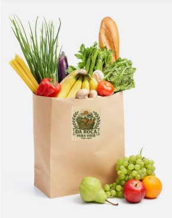
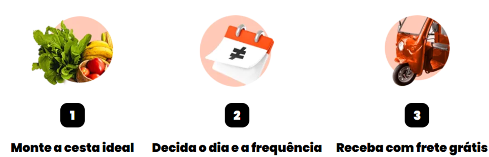

Monte sua cesta. Aproveite o nosso mix para experimentar novos sabores e cores no seu prato. Uma boa saúde começa pela diversidade de alimentos que ingerimos, e quem sabe se na sua próxima cesta você não descobre um novo queridinho?
Somos uma feira online que busca democratizar a alimentação saudável enquanto combatemos o desperdício de alimentos. Trabalhamos em parceria com produtores de orgânicos certificados, valorizando alimentos "fora do padrão" que seriam rejeitados. É assim que conseguimos entregar uma cesta completa na sua casa com preço mais justo do que os oferecidos pelos mercados convencionais.
